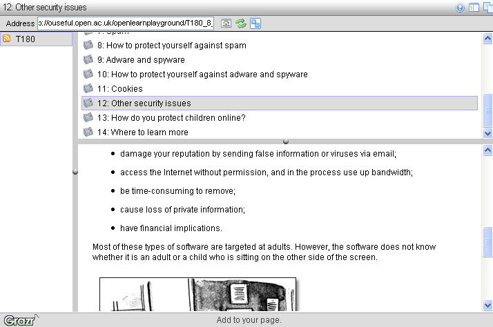
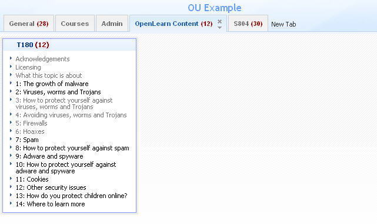

October 26, 2006
OpenLearn Content via RSS?
One of the great thimgs about the OpenLearn project is that as well as making OU teaching materials available for free via the "OpenLearn VLE", the content can also be obtained in a raw, XML format via the partner LabSpace site.
Each OpenLearn 'course' has a corresponding course in LabSpace. LabSpace is the remix part of the project - users are encouraged to download content, rework it, develop it, maybe augment or remix it with their own content and as a result produce new chunks of learning material.
Most of the work that's being put into the LabSpace site at the moment has to do with developing tools to support collaboration - the MSG lite instant messenger , for example, 1-click Flashmeeting and Compendium.
Whilst these apps are all good stuff, my interests at the moment have far more to do with freeing up the flow of the content, and exploring appropriate tools and techniques for moving it around the web and maybe inclduing it in 3rd party sites.
So here's another taster of things I've been tinkering with during midnight hours - an RSS version of one of the OpenLearn courses displayed using Grazr:

You can download a copy of the XML from the course page in the LabSpace. I generated this RSS version of the material using this XSL stylesheet. Note that at the moment it does not transform all the elements defined in the schema used to define the structure of the XML formatted learning materials, and it contains a couple of hacks that tie it to a particular set of materials...
And just because, here's what it looks like in Netvibes... Firstly, just a list of the separate items:

And here, reading a particular item:

This sort of display raises quite a lot of issues regarding presentation, I think, that I need to go away and think about - and maybe post about later - in a lot more depth...
I wonder what sort of questions an embedded Grazr view raises...? Let's ask the question and see (to see this, you'll probably need to visit the actual web page that carries this post):

Enough for now...
Posted by ajh59 at October 26, 2006 07:54 PM